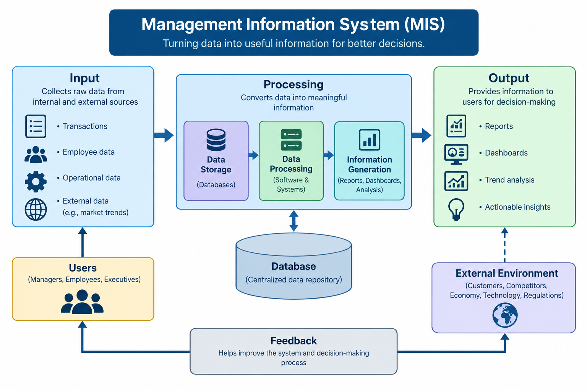

MIS & AI Ethics
Website Overview
Designed By: Claire Ngo, Kristen Nowlin, Seth Crump, Julie Alford, Vedant Jadhav - Fall 2026
October 25, 2026

Management Information Systems (MIS) is a field that combines information technology with business processes to help organizations run smoothly, make better decisions, and achieve their goals. It focuses on designing, developing, and managing information systems that allow businesses to collect, process, store, and analyze data. These systems help improve efficiency, increase productivity, and make everyday tasks easier. MIS also helps businesses keep up with new technology, improve communication, and manage their resources more effectively. It plays an important role in helping businesses adapt to change, solve problems, and find new ways to improve their operations. MIS helps businesses use technology to work smarter, solve problems, and keep up with changes in the digital world. Here are three MIS websites: MIT Sloan Management Review, IBM, and Association for Information Systems.
AI-polished version: Management Information Systems (MIS) is a field that combines information technology with business processes to support daily operations, improve decision-making, and help organizations achieve their goals. It focuses on designing, implementing, and managing information systems that allow businesses to collect, store, process, and analyze data. MIS also connects technology with management by ensuring that systems align with business objectives. Through tools such as databases, business analytics, and enterprise systems, organizations can improve communication, manage resources more effectively, solve problems, and stay competitive in a changing business environment. MIS also helps businesses identify areas where they can improve their performance and become more efficient. As technology continues to change, MIS allows organizations to adapt and find new ways to meet their needs.

MIS Topic Overview
| MIS Topic Name | Description/Purpose |
|---|---|
| Artificial Intelligence (AI) | Systems that mimic human intelligence to automate tasks, spot patterns, and make data-driven decisions. |
| Data & Analytics | Techniques and processes for collecting, processing, and analyzing data to inform decision-making and uncover insights. |
| Cybersecurity | Protecting systems, networks, and data from digital threats and unauthorized access. |